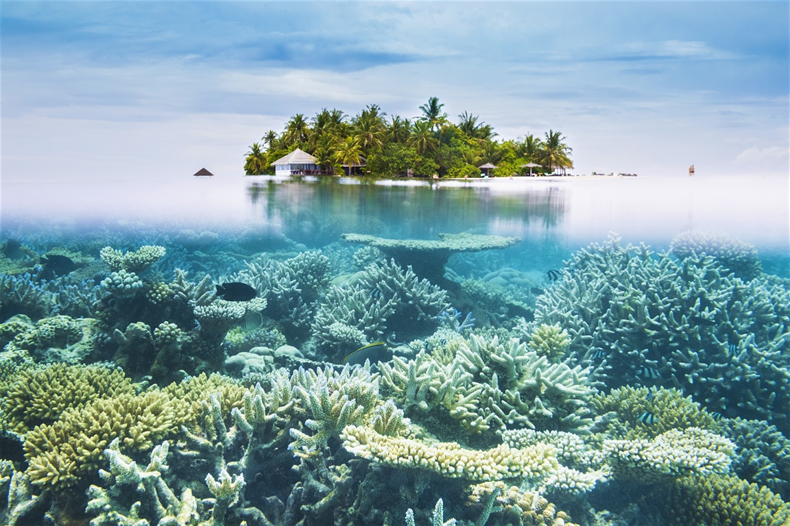
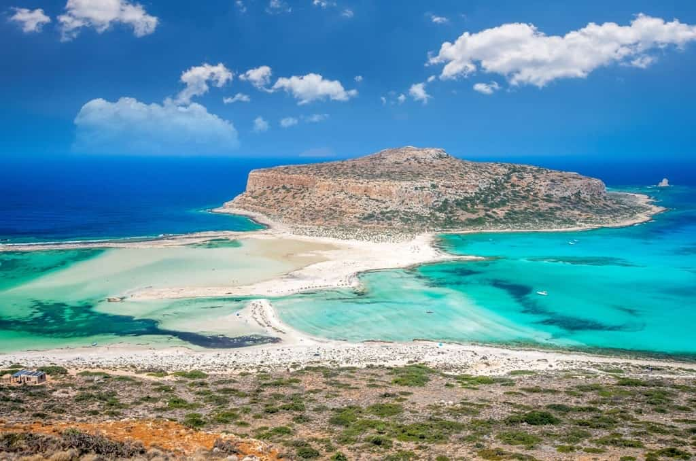
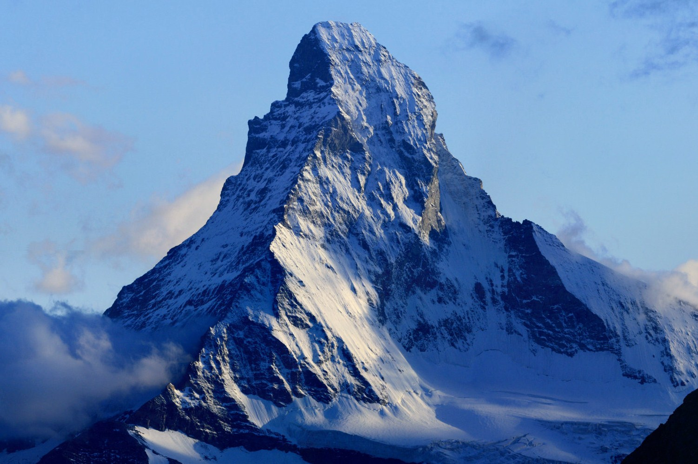
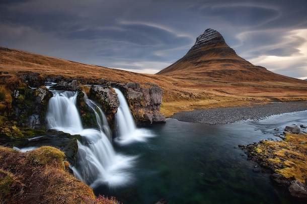

Maldives
Unrivalled luxury, stunning white-sand beaches and an amazing underwater world make Maldives an obvious choice for a true holiday of a lifetime.

God adds beautiful objects and images on planet earth, such as sunrise, sunset, rainbows, snows on mountain tops, and many others. Don't spare your compliment of our beautiful world.
Unrivalled luxury, stunning white-sand beaches and an amazing underwater world make Maldives an obvious choice for a true holiday of a lifetime.

The largest island in Greece. Crete is a feast for the senses: wild natural beauty and thousands of years of culture, history and exquisite cuisine.

Whether your visit is for relaxation or to explore and discover the many well known and countless hidden treasures of Crete, you will not be disappointed by the diversity of the landscape – the rugged mountains, the endless beaches and the turquoise seas, the many cities, towns and villages, and stunning countryside.
It may not be the tallest peak in The Alps. But, there are no other peaks in the Alps or in the rest of the world as beautiful as Matterhorn. It's truly a magical attraction. This pyramidal shaped mountain situated on Swiss-Italian border. Rising 4478 meters above sea level it is one of the highest peaks Switzerland. The faces of Matterhorn are steep. So, the editing could be difficult.

Standing tall above the small fishing town of Grundarfjörður, Kirkjufell is the most photographed mountain in Iceland, one of the top 10 most beautiful mountains in the world, and yet most recognized as being "Arrow Head Mountain" on Game of Thrones.
